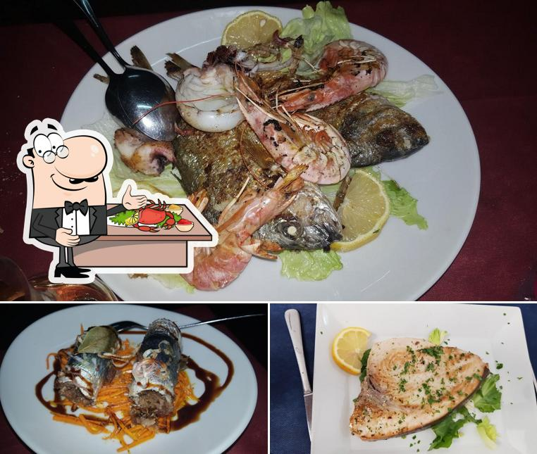
Il più amatoFregola nera allo scoglio
Sugo di scampi, pesto di pistacchio e bottarga: il piatto più celebrato dalle recensioni.
Vedi in menù →Oristano · Sardegna
Specialità sarde con prodotti locali — cucina di mare nel cuore di Oristano
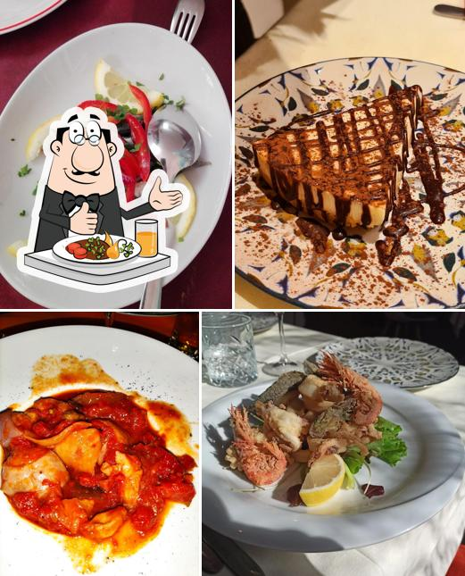
La Trattoria
Nel centro storico, a due passi dalla Chiesa di Santa Chiara, la Trattoria Portixedda racconta la nostra isola a tavola: pesce fresco del giorno, prodotti del territorio e ricette sarde reinterpretate con cura e passione.
Da Roberto e Gabriella ogni ospite è di famiglia. Un'accoglienza calorosa e genuina, una cucina che unisce il piacere di mangiare bene alla grande cura dei piatti. Anche vegetariani, vegani e intolleranti troveranno sempre un'alternativa pensata su misura.
Le Specialità

Il più amatoSugo di scampi, pesto di pistacchio e bottarga: il piatto più celebrato dalle recensioni.
Vedi in menù →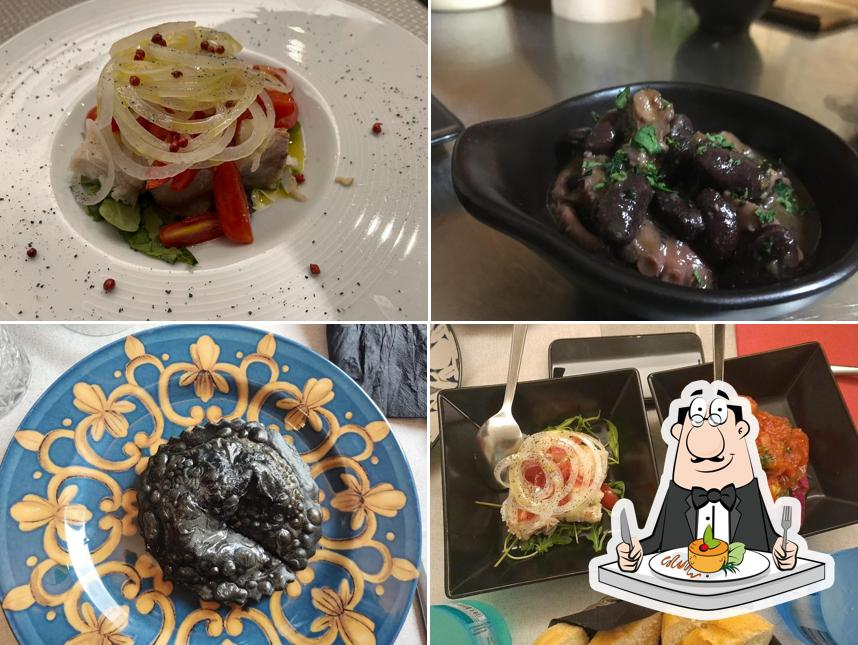
Classico del mareDue grandi classici del Golfo di Oristano: arselle fresche e bottarga di muggine.
Vedi in menù →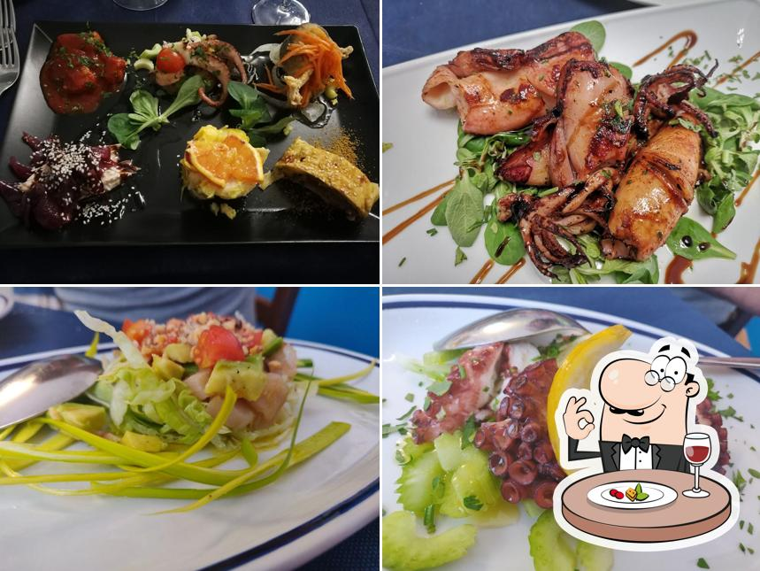
StagionaleDescritto da molti ospiti come il miglior tonno dell'isola: scottatura perfetta, cuore tenero.
Vedi in menù →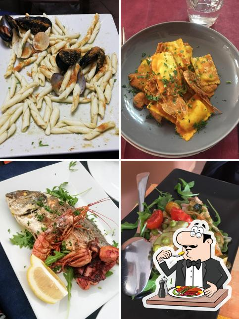
Tradizione sardaI culurgiones d'Ogliastra di patate e menta, conditi col sugo di pomodoro burdo.
Vedi in menù →Galleria
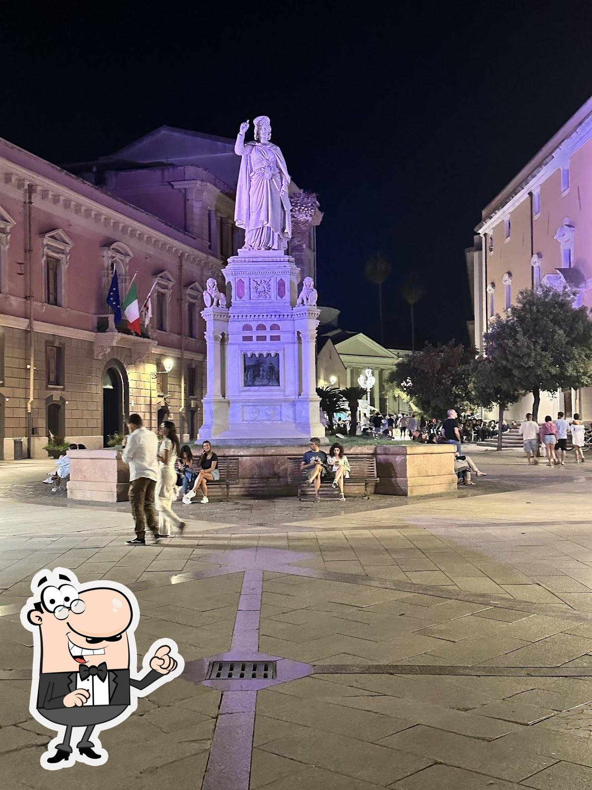
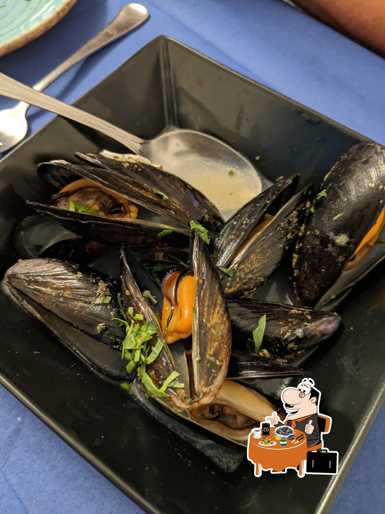
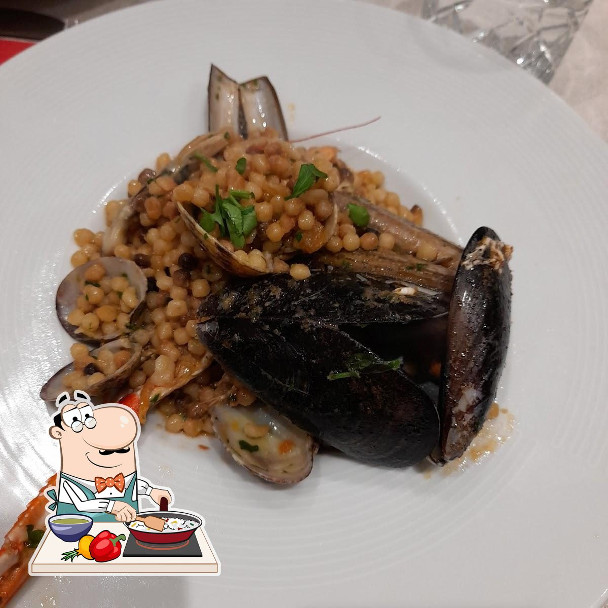
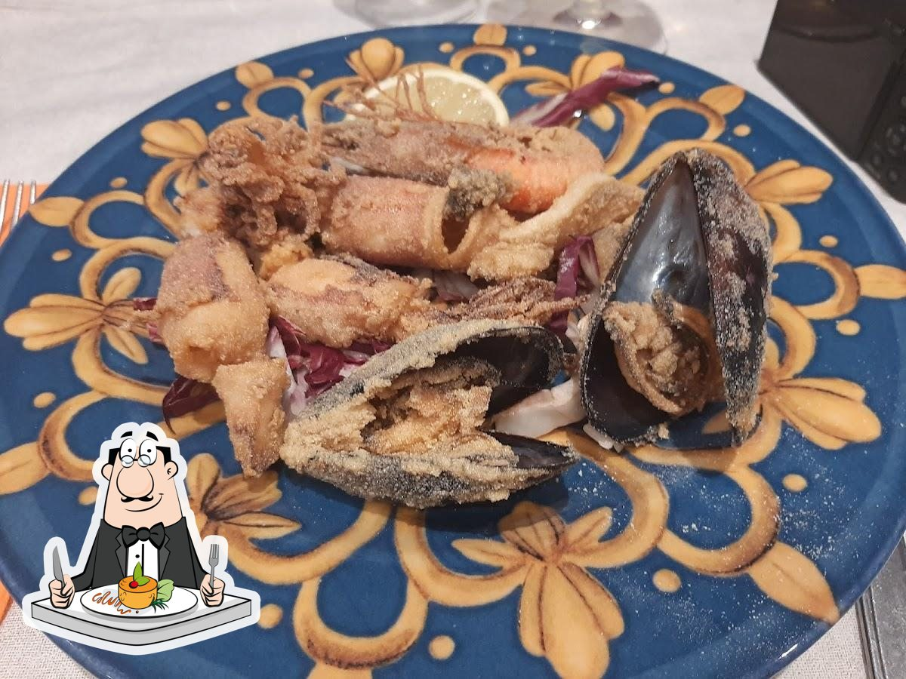
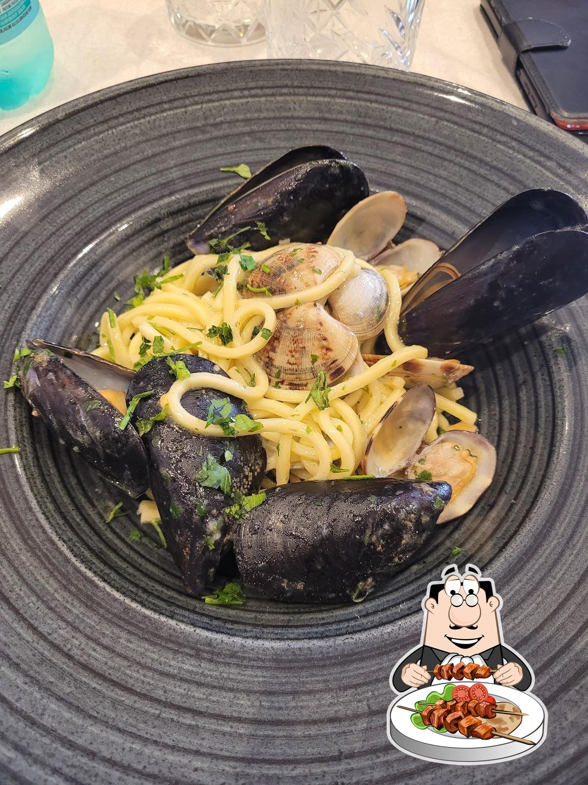
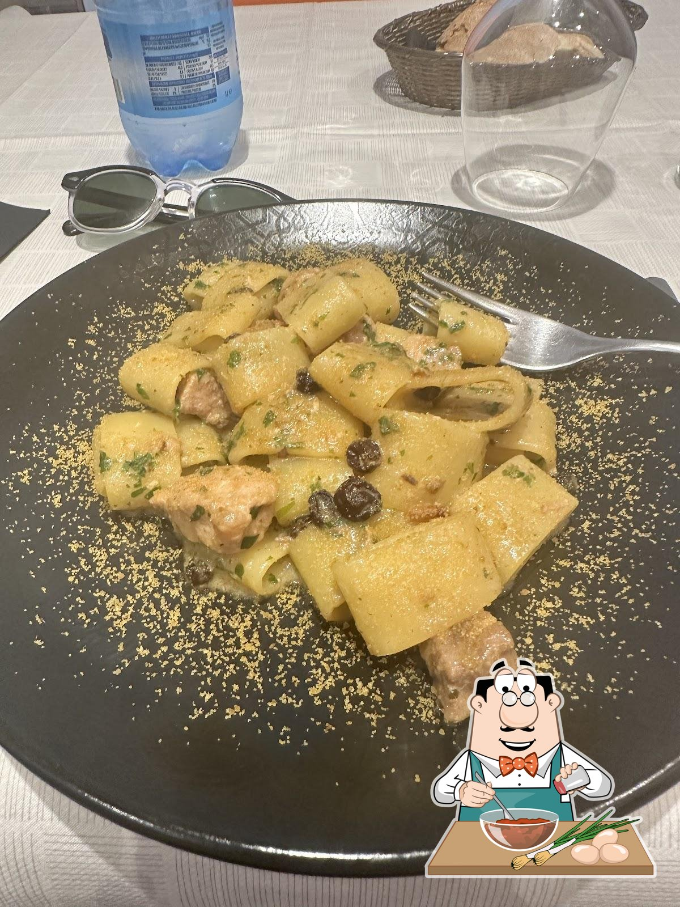
Recensioni
"Cucina superba e ospitalità calorosa di Roberto e Gabriella. Un'eccellenza a Oristano!"
"Il tonno rosso migliore mai assaggiato sull'isola. Ottimo rapporto qualità-prezzo: ho pagato il conto con gioia."
"Piatti eccellenti, servizio gentile e accogliente. Menzione d'onore agli antipasti di mare e al tonno scottato."
"Cibo sardo tipico di altissima qualità. Il titolare parla spagnolo, francese e inglese e ti accoglie come in famiglia."
"Da non perdere! Frittura di mare eccezionale e freschissima, piatti curati e abbondanti. Un 10 che si rinnova a ogni visita."
"Cucina sarda in vero trionfo: pesce freschissimo e piatti abbondanti e deliziosi. La fregola? La migliore mai assaggiata."
"Piatti curati e freschissimi, ampia scelta e accoglienza familiare. La trattoria si conferma un punto di riferimento a Oristano."
"Esperienza inaspettata: piatti eccellenti e un servizio gentile e cordiale. Il padrone di casa Roberto rende tutto speciale."
"Pur non essendo specializzati in cucina vegana, ci hanno preparato una cena deliziosa: quattro portate, tutte diverse e tutte buonissime."
Info Utili
Nel cuore del centro storico di Oristano, a pochi passi dalla Chiesa di Santa Chiara.
Apri in Google Maps →Opzioni vegetariane, vegane e senza glutine. Menù vegano completo su richiesta con 48h di preavviso.
Chiedi al ristorante →Prenotazioni